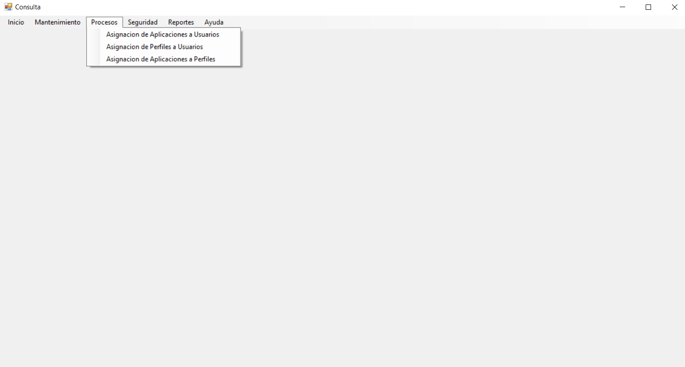

En la opción de Procesos se encontrará todo los formularios para manipular la información de diferentes areas de asignación como Aplicaciones a Usuarios, Perfiles a Usuarios y Aplicaciones a Perfiles.
Este apartado es dedicado a realizar tareas de apliaciones a usuarios, relacionando cada uno de ellos. Indique los permisos para cada uno.
Este apartado es dedicado a realizar tareas de asignaciones de los perfiles, relacionando cada uno de ellos.
Este apartado es dedicado a realizar tareas de apliaciones a perfiles, relacionando cada uno de ellos. Indique los permisos para cada uno.